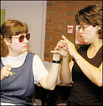

The Israeli and American actors may come from different sides of the world, but both live in one where they can neither see and nor hear.
And in a workshop conducted by Nalaga'at, a deafblind theater troupe from Israel, at Perkins School for the Blind Wednesday afternoon, their lives and worlds were joined together through acting exercises that focused on the senses they do have.
"I say one of the biggest milestones was during the first show at all," Adina Tal, artistic director of Nalaga'at, told the deafblind people and interpreters at the workshop. "The biggest revelation at the first show was that all of the sudden the roles were changed. The 12 deafblind actors on stage were the ones giving a gift - the gift of art, and I would say, the gift of hope."
Nalaga'at's performances this week in Newton and at Perkins are its first in the United States, and the workshop at Perkins was the first the troupe has ever done. Nalaga'at means "do touch" in Hebrew.
Many members of Nalaga'at were born with Usher syndrome, in which people are born deaf and gradually lose their sight.
During the two-hour workshop, Tal directed the five members of Boston's deafblind community, along with her troupe, in creative exercises that focused on touch, rhythm and working as a team.
"I thought the workshop was so fun, and it really impacted me quite a bit," Watertown resident Jaimi Lard, who was born deaf and blind, said through her interpreter, Jeannette Ocampo Welch. Lard, 39, who graduated from Perkins in 1986, said one of her favorite activities during the workshop was when the Israeli troupe members and the local deafblind people sat around drums, beat rhythms together and imitated a rainstorm.
"I found that was so wonderful because I could follow it myself. I could just touch the drum and feel it in my body and feel what was going on," Lard said.
Another exercise had pairs of deafblind individuals place their palms together and follow one another in their movements. They also experimented with rhythm and noises by sitting in rows across from each other and tapping on each other's knees.
Although the actors and Boston participants were all deafblind, Tal reminded them several times to "stop chattering," since they were eagerly trying to talk to each other in sign language during the small breaks from exercises.
Lard has been involved in deafblind theater before, but said the Israeli group was more tactile.
Tal, who can see and hear, said she was an actress and director before someone asked her to do a workshop for the deafblind community in Israel. "And then I started to work with them and I fell in love," she said.
Tal expects the same from these actors as she does of those actors who can see and hear.
"We really try to work as professional as possible," she said.
Their show, called "Light Is Heard in Zig Zag," is a play that gives the audience a glimpse into the life of a deafblind person. Nalaga'at was established in 2002, and they performed in Montreal and Toronto before coming to Boston..
Tal said that they eventually hope to open a center in Jerusalem, where deafblind people can be trained to increase their independence and develop artistic skills.
Lard said that the hearing community should be exposed to deafblind people and the way they communicate.
"The hearing audience needs to be exposed to more of the deafblind community on how we communicate through tactile and American Sign Language," Lard said. "I want to see the deafblind community experience less isolation, and I think that is going to be through the awareness of the hearing community."
Tal tells her actors that there are a lot of people who can see and hear more than they can.
"I think that there are few people in the world who can feel the things you feel," she adds.